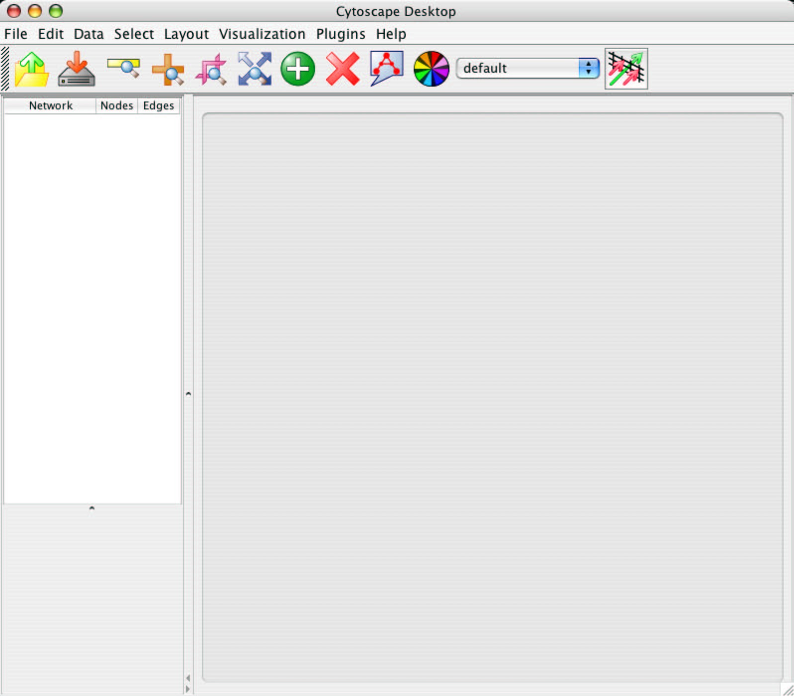

Launching Cytoscape
Cytoscape is a Java application that runs on Linux,
Windows, and Mac OS X.
System requirements
The system requirements for Cytoscape depend on
the size of the networks the user wants to load, view and manipulate.
We recommend a recent computer (1GHz CPU or higher) with
at least 512MB of free physical RAM, preferably 1GB if you are working with
larger networks.
Cytoscape expects a minimum screen resolution of 1024x768.
Installing Cytoscape
There are a number of options for downloading Cytoscape.
- On Windows and Linix platforms,
one-step installation is available via InstallAnywhere from ZeroG Software,
Inc. (http://zerog.com).
For one-step installation, go to
http://www.cytoscape.org, click Download Cytoscape, and follow the on-screen instruction
-
For Mac OS X, we provide an alternative installation, available as a .dmg.zip file. When installed via this method, Cytoscape functions as a regular Mac application, and can be accessed via your Applications folder.
- Finally, you can download and install a compressed archive distribution. Instructions for this option are provided below.
(1) Download and unpack the
distribution.
Cytoscape is distributed as a compressed archive
(tar.gz or zip) containing the following files and directories:
cytoscape.jar
Main
Cytoscape application (Java archive)
cytoscape.props
User-configurable
properties and preferences
vizmap.props
User-configurable
visual mapping preferences
cytoscape.sh
Script
to run Cytoscape from command line (Linux, Mac OS X)
cytoscape.bat
Script
to run Cytoscape (Windows)
LICENSE.txt
Cytoscape
GNU LGPL License
Cytoscape2_2Manual.pdf
Cytoscape
2.2 Manual (the document you are reading now)
sampleData/
galFiltered.gml
Sample
molecular interaction network file *
galFiltered.sif
Identical
network in Simple Interaction Format *
galExpData.pvals
Sample
gene expression matrix file *
BINDyeast.sif
Network
of all yeast protein-protein interactions in the BIND database as of
Nov, 2005 **
BINDhuman.sif
Network
of all human protein-protein interactions in the BIND database as of
Nov, 2005 **
yeastHighQuality.sif
Sample
molecular interaction network file ***
annotation/
Directory
containing Gene Ontology database entries (currently for yeast only).
Info in this directory is used to associate gene names with synonyms
as well as process, function, and cellular location data.
plugins/
Directory
containing cytoscape PlugIns, in .jar format.
* From Ideker et al, Science 292:929 (2001)
** Obtained from data hosted at
http://www.blueprint.org/bind/bind_downloads.html
** From von Mering et al, Nature, 417:399 (2002) and Lee
et al, Science 298:799 (2002)
(2) If necessary, install Java.
If not already installed on your computer, download and install the
Java 2 Runtime Environment, version 1.4.2 or higher. It can be found
at:
http://java.sun.com/j2se/1.4.2/download.html
(3) Launch the application.
Run "cytoscape.sh" from the command line (Linux or Mac
OS X) or double-clicking "cytoscape.bat" (Windows).
Alternatively, you can pass the .jar file to Java directly using the
command "java -jar cytoscape.jar". In Windows, it is also
possible to directly double-click the .jar file to launch it. However,
this does not allow specification of command-line arguments
(such as the location of the annotation data directory, see the
section 4. Command Line Arguments for details). On Mac OS
X, users who downloaded the Mac OS X version of Cytoscape, can
double-click on the Cytoscape icon to start Cytoscape. Either
double-clicking or dragging onto the Cytoscape application icon any .sif
or .gml file will load that file into Cytoscape.
Important Note:
For the application to work properly, ALL
FILES MUST BE LEFT IN THE DIRECTORY IN WHICH THEY ARE UNPACKED.
The core Cytoscape applications assumes this directory structure when
looking for certain files, sucah as cytoscape.props, vizmap.props, and
the annotation database.
Cytoscape
Window
When you succeed in launching
Cytoscape, a window will appear that looks like this:
